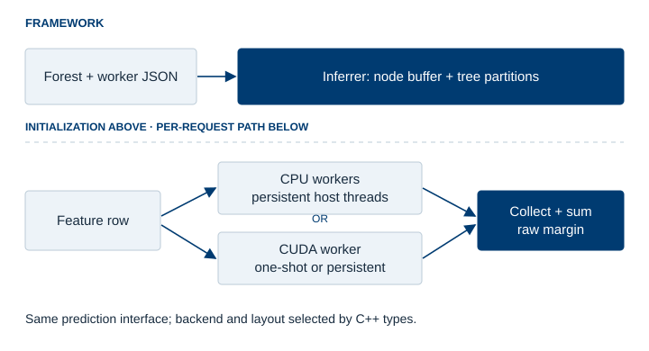
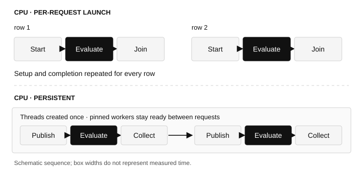
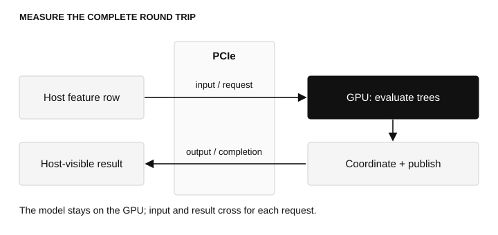
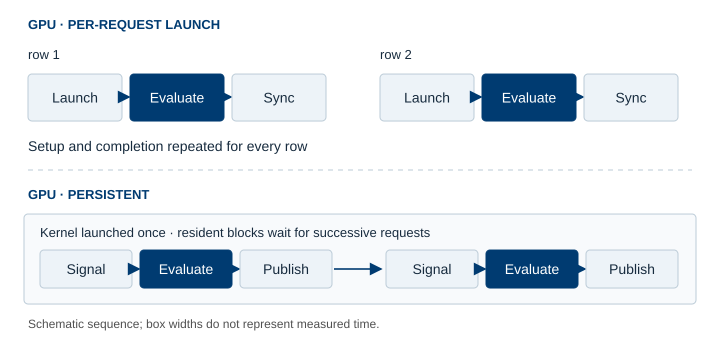
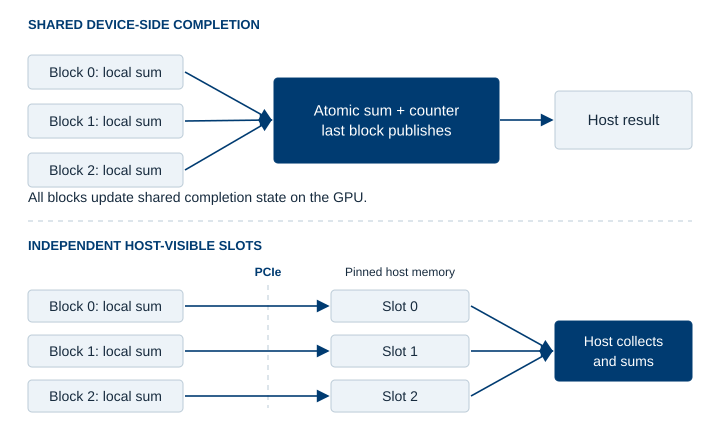
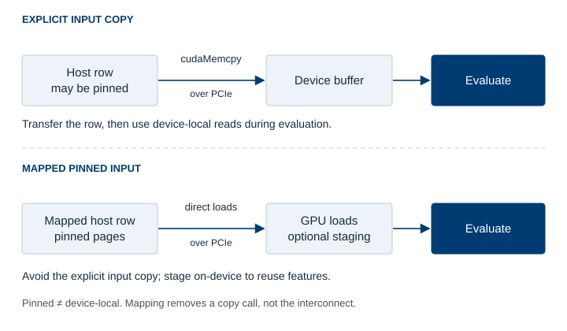

How can we optimize batch-one tree inference to a few microseconds?
We introduce QLeaf, a framework and benchmark project that reduces latency throughout the inference path, from kernel launches to host–device handoff.
In the era of AI and deep learning, what is the point of talking about tree models? A practical reason is that they still perform well, sometimes at the state of the art, on a variety of problems involving tabular data, ranging from pattern recognition in high-energy physics to real-time decision problems in robotics. Tree models pose different challenges in training and inference than neural networks do. In this note, we focus on inference. For example, gradient boosting, one of the most popular tree-based methods, usually produces a large number of shallow trees.
The large number of trees offers considerable parallelism, but their limited depth means that the processor, whether CPU or GPU, does very little work per tree. This is an atypical workload for GPUs: distributing trees among threads can leave each thread with too little work to keep the GPU busy. In the extreme case of batch-one inference, host–device handoff and coordination can dominate end-to-end latency. These overheads are usually amortized over more computation in workloads with higher arithmetic intensity. The conventional wisdom is therefore to use a CPU for tree inference and, when possible, parallelize the task across multiple cores.
In this note, we introduce QLeaf, a systematic benchmarking framework that may also be useful in production. It exposes a common interface for multithreaded CPU and GPU backends. We begin with the latency ablation and the framework's structure, then examine the CPU implementation, with its persistent workers and lock-free handoff. We then move to a naive GPU implementation and work through a series of optimizations to reach a competitive GPU implementation. The interesting lesson is how much of the request time lies outside tree evaluation itself, and how to reduce that overhead with somewhat non-standard tricks.
In this note: Latency ablation · Framework · CPU · GPU · Workload dependence
Start with the latency ablation
The table below traces one optimization path for 5,000 depth-six HIGGS trees, with 28 input features and 512 CUDA threads per block. The persistent rows are cumulative; the one-shot row is a separate reference. Values are host-to-host latencies in microseconds.
| GPU traversal configuration | Median, µs | p99, µs |
|---|---|---|
| One-shot kernel, mapped input | 11.247 | 12.239 |
| Initial persistent kernel, copied input | 26.735 | 30.703 |
| Remove device-side cross-block completion | 17.487 | 20.671 |
| Use a single request poller | 8.631 | 9.375 |
| Read mapped host input | 7.079 | 7.771 |
| Stage input with sentinel-based signaling | 6.891 | 7.375 |
Keeping the kernel alive initially makes the request slower. Removing cross-block completion and reducing the number of request pollers produce the largest gains; changing the input handoff then brings the median below seven microseconds. We will return to the mechanism behind each row.
The timer starts before feature staging and stops when the result is available to the CPU. For mapped input, the current feature row is copied into the mapped host buffer within that interval. Each run uses 10,000 warmup requests and 100,000 measured requests. Model loading and worker initialization are outside the steady-state measurement.
The benchmark machine has an Intel Core i7-12700F and a 12 GiB CUDA-capable consumer GPU. CPU turbo is disabled in the main comparisons; GPU application clocks are requested at 1,800 MHz for the SMs and 7,501 MHz for memory. The second workload, epsilon, has 2,000 features instead of 28. Both use depth-six ensembles of 500, 1,000, 2,000, and 5,000 trees. The full benchmark records the distributions, configurations, and data provenance.
The framework: model, workers, and reduction
The central interface is qleaf::Inferrer. It owns the model representation, partitions the forest among workers, submits a feature row, and collects the workers' results. The current prediction output is a scalar raw margin: the sum of the tree outputs.
C++ types select the node layout, worker implementation, load balancer, and reducer. Runtime JSON supplies the model and worker settings, such as CPU affinity. This makes it possible to change the execution policy while retaining the same prediction interface and workload.

- Node buffer: stores the tree data.
CompactNodeBufferkeeps split values and feature indices in separate arrays;TreeNodeBufferprovides a direct node layout. - Load balancer: assigns groups of trees to workers. The default
FairBalancerdivides the tree count evenly. - Worker: evaluates its assigned trees. CPU traversal, CPU bitmask evaluation, and CUDA workers fit the same interface.
ThreadedWorkeradds a persistent host thread around a CPU worker. - Reducer: combines the workers' partial sums.
RegressionReduceradds them to produce the margin.
At the interface level, a request is simply:
// The concrete Inferrer type selects the backend and layout.
auto margin = inferrer.predict(features);
Internally, the inferrer submits the row to all workers before collecting their results, allowing threaded workers to evaluate their partitions concurrently. A CUDA worker manages its own grid of blocks: another level of parallelism inside the worker.
The implementation is in qleaf.h, with CUDA policies and workers in gworkers.cuh.
CPU: do little work per tree and keep workers ready
Follow one path through each tree
For a depth-six binary tree, inference needs six split decisions followed by a leaf value. It does not need to inspect every internal node. QLeaf's branch-traversal worker computes the next node index arithmetically at each depth and accumulates leaf values across its trees.
This is a small loop over a compact model representation. The code exposes the absence of aliasing to the compiler, leaving room for vectorization across trees. The dependency within a single path remains: the next feature and threshold depend on the preceding comparison.
The alternative bitmask worker evaluates conditions and intersects masks of reachable leaves. That creates more regular work, but also requires more comparisons than following one path. For shallow trees, the extra work must earn its place through parallel execution.
Create threads once, then hand off requests
Launching and joining threads around every prediction would add setup and scheduling work to a request lasting only a few microseconds. QLeaf instead constructs persistent threads with the inferrer. Each thread owns a tree partition and can be pinned to a CPU core.

The handoff uses atomics rather than a mutex-protected task queue. The caller publishes the feature pointer with a release store. The worker observes it with an acquire load, evaluates its partition, and publishes a ready flag with release semantics. The caller waits with an acquire load before reading the result. The feature row remains valid until prediction completes.
The pointer and ready flag form a small request/response protocol, with one request in flight. This avoids a thread launch or blocking wakeup on the steady-state path. Workers spin while waiting, so this low-latency configuration occupies cores even between requests.
Thread placement is part of the algorithm
On a hybrid CPU, “eight threads” is not a complete configuration. Physical cores, SMT siblings, and efficiency cores are not interchangeable. The benchmark compares physical-first placement with sibling-first placement, reserving a logical CPU for dispatch.
Physical-first placement wins 18 of 24 comparisons with two, four, or eight workers. At 16 workers, sibling-first wins seven of eight comparisons. The latter ordering can use the performance cores' SMT siblings before spilling work onto efficiency cores.
For 5,000 HIGGS trees, eight workers take 12.351 µs with physical-first placement and 28.751 µs with sibling-first placement. At 16 workers, the ordering reverses: 24.191 µs versus 11.959 µs. More workers help only if the work distribution and placement justify the additional coordination.
| Workload | Best CPU median, µs | Best uncached GPU median, µs |
|---|---|---|
| HIGGS, 500 trees | 2.177 | 3.803 |
| HIGGS, 5,000 trees | 11.959 | 6.891 |
| epsilon, 500 trees | 2.427 | 7.027 |
| epsilon, 5,000 trees | 12.559 | 9.871 |
These CPU results use the no-turbo policy. The separate turbo-enabled CPU reference reaches 5.679 µs for 5,000 HIGGS trees and 6.191 µs for 5,000 epsilon trees. A host-only request avoids the device round trip entirely, and CPU frequency matters at this timescale.
GPU: spend the latency budget on tree evaluation
1. A kernel launch for every request
The simplest GPU path launches a grid, evaluates the forest, waits for completion, and returns block partials to the host for the final sum. The forest is already on the GPU; it is not transferred afresh for each prediction.
A thread can follow one tree path while many trees are processed in parallel. There is little arithmetic per tree, so kernel launch, input movement, synchronization, and result visibility account for significant parts of the request time. More arithmetic throughput does not remove those costs.

2. Keep the kernel resident
A persistent kernel is launched once and loops over requests. This is the GPU counterpart of the CPU worker pool: setup is moved out of the steady-state path, and each new row arrives through a handoff protocol.

The initial persistent implementation copies the feature row into device memory, advances a sequence flag, lets every block poll it, and combines block results through device-wide completion logic. Its 26.735 µs median exceeds the one-shot mapped-input reference's 11.247 µs. The comparison changes the input path as well as the launch policy; it demonstrates the cost of the initial design rather than isolating launch overhead.
When the protocol requires all blocks to make progress, the persistent grid must fit on the device. QLeaf checks co-residency instead of assuming an arbitrarily large grid can participate in the handshake.
3. Let blocks finish independently; reduce on the host
Each block first reduces its own tree outputs locally. The initial design atomically adds that partial sum to a shared device result and updates a shared completion counter. The last arriving block publishes the completed result and signals the host.
The blocks evaluate trees independently but contend on shared state when finishing. Atomic accumulation and final-arriver coordination introduce a serial step into the request.
The alternative retains local block reduction and removes the shared completion step. Each block writes its sum into its own host-visible, pinned result slot. The CPU waits until all slots have been filled, then sums the values in the small array of block results.

For 5,000 HIGGS trees, the median falls from 26.735 to 17.487 µs, and p99 from 30.703 to 20.671 µs. A little extra work on the CPU simplifies the device path.
An unfilled slot contains NaN; a non-NaN partial sum also serves as its completion marker. The host collects the results and rearms the slots. This relies on non-NaN partial sums and the single-request protocol. Independent slots remove contention between blocks, while publication and buffer reuse still require a well-defined protocol.
4. One block polls the host; the others wait on device state
A system-visible request flag is expensive when every block repeatedly reads it. Many consumers inspecting the same flag generate traffic without doing useful tree work.
The single-poller policy assigns this job to block zero, which detects a request and updates a device-scope broadcast sequence. Other blocks wait on that device-side sequence. In the staged variants, block zero also prepares the feature row before broadcasting readiness.
This changes where the waiting occurs: most blocks no longer observe host-visible request state. For 5,000 HIGGS trees, the median falls from 17.487 to 8.631 µs. For 500 trees, it instead rises slightly, from 6.419 to 6.647 µs. With fewer blocks, the additional broadcast stage has less traffic to eliminate.
5. Mapped pinned input versus an explicit copy
Pinned memory is host memory whose pages are kept resident. It can serve as a source for explicit transfers. Mapping additionally makes it accessible to GPU loads and stores. On a discrete GPU, mapped host access still crosses the interconnect: “zero copy” avoids an explicit copy into a separate device buffer, not physical data movement. NVIDIA's memory guide explains the distinction.

For a small row, issuing and completing a copy can cost more than moving its bytes. HIGGS has only 112 bytes of float features. After the poll storm has been removed, mapped input reduces the 5,000-tree median from 8.631 to 7.079 µs.
Direct access is less attractive if many workers repeatedly fetch a large row from host memory. Staging addresses that reuse problem: the leader reads the row into a device buffer, publishes readiness, and workers evaluate against that staged copy. The CPU still writes each row into the mapped input buffer; this host-side copy remains inside the benchmark's timing interval.
6. Let the data signal its own arrival
The sequence-flag protocol separates data publication from notification: prepare the features, then publish an ordered request flag. The sentinel protocol folds those operations together.
Before a request, the mapped input contains reserved sentinel values. The CPU writes the row. The leader checks and stages features until every value has arrived, resets the mapped input to sentinels, and broadcasts the request through device-side state. Evaluation reads the staged row, so resetting the input does not destroy the data being processed.
The host waits for all results before sending another row. Feature values must be finite and must not use the reserved +/-FLT_MAX sentinels. Under this protocol, data arrival replaces a separate host-visible request flag in the steady-state handoff.
For 5,000 HIGGS trees, the median falls from 7.079 to 6.891 µs and p99 from 7.771 to 7.375 µs. The gain is smaller than those from the earlier coordination changes. This ablation switches staging and sentinel signaling together, so it does not measure either change in isolation.
7. Expose useful parallelism within each tree
Traversal follows only one path, but successive steps depend on earlier comparisons. Bitmask evaluation performs more comparisons and combines masks of possible leaves. Its potential advantage is that several lanes can share that work.
At one thread per tree, the extra work generally loses: the staged persistent bitmask path takes 18.479 µs for 5,000 HIGGS trees. Tuning to four threads per tree reduces it to 12.311 µs, still above traversal's 6.891 µs in the controlled comparison.
Layout also matters. Node-major storage places the same node position from neighboring trees together, which can improve coalescing when neighboring lanes process different trees. When several lanes process one tree, another layout may be preferable. For epsilon, tuned bitmask workers with a row-major layout are the best GPU variants at 1,000 and 2,000 trees. Layout and threads per tree need to be considered together.
8. Cache trees where the resident working set fits
A persistent kernel can retain tree data in shared memory across requests, avoiding repeated reads of those nodes from global memory. This benefit comes at the cost of a larger shared-memory footprint, which can limit the number of resident blocks.
For 500 HIGGS trees, the matched uncached traversal in the cache sweep takes 4.191 µs, compared with 3.333 µs for one-wave caching. The best uncached result from the broader sweep is 3.803 µs; using the matched comparison separates caching from block-size tuning. The 5,000-tree cached persistent variants are skipped because their grids are not co-resident.
What changes with the workload?
The epsilon feature row is about 7.8 KiB, rather than HIGGS's 112 bytes. At 5,000 trees, removing cross-block completion and choosing a polling policy reduces epsilon traversal from 16.639 to 9.871 µs. Adding mapped/staged signaling increases it to 10.479 µs. The copied-input path is preferable here.
This helps explain why QLeaf exposes policies instead of choosing one configuration for every workload. Feature width changes communication cost. Forest size changes the work available to distribute. Tree depth and evaluation method change the work within each tree. Shared-memory use changes which persistent grids can remain resident.
For batch-one inference, optimization starts with a good CPU implementation and a measurement of the complete request. On the GPU, removing repeated launches is only the first step. Reducing the overhead of cross-block completion, host polling, and input handoff is what makes the persistent path competitive. The resulting latency is increasingly shaped by communication and result visibility; the ablation shows how to reduce those costs without itself measuring a physical communication lower bound.
The QLeaf repository contains the framework. The benchmark report used here and source at the same revision provide the full configurations and implementation details.